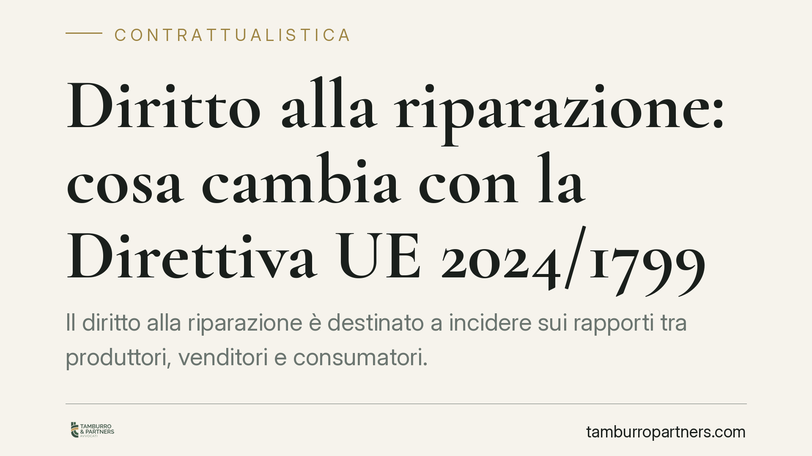

Diritto alla riparazione: cosa cambia con la Direttiva UE 2024/1799
Il diritto alla riparazione è destinato a incidere sui rapporti tra produttori, venditori e consumatori. La Direttiva (UE) 2024/1799 introduce un obbligo di riparazione per alcuni prodotti anche oltre la garanzia e un rafforzamento delle tutele. In attesa del completo recepimento italiano, è utile capire cosa è già definito e come prepararsi.

Il quadro
La Direttiva (UE) 2024/1799 interviene su un nodo noto del mercato dei beni di consumo: la difficoltà, per il consumatore, di far riparare un prodotto difettoso una volta scaduta la garanzia. L'obiettivo dichiarato è promuovere la riparazione rispetto alla sostituzione, con effetti attesi sul piano ambientale e su quello economico.
La direttiva fissa un termine di recepimento per gli Stati membri. È importante distinguere due piani che spesso vengono confusi: il termine entro cui l'Italia deve adottare la norma interna e la data di effettiva applicabilità degli obblighi ai soggetti coinvolti. Finché il decreto di recepimento non è pubblicato con i suoi esatti estremi, è prudente trattare numerazione del provvedimento e collocazione nel Codice del consumo come dati da confermare.
Inquadramento normativo
La direttiva opera su due versanti.
Il primo riguarda la garanzia legale di conformità, già disciplinata dagli articoli 128 e seguenti del Codice del consumo (D.lgs. 206/2005), come modificati dal D.lgs. 170/2021 in attuazione della Direttiva (UE) 2019/771. In questo ambito il consumatore può già oggi chiedere, per i difetti coperti da garanzia, la riparazione o la sostituzione del bene. La novità europea incide sul rapporto tra i due rimedi: dove il legislatore interno sceglierà di dare priorità alla riparazione, il consumatore potrà vedersi riconosciuta tale soluzione come via preferenziale, salvi i casi di sproporzione dei costi o di impossibilità.
Il secondo versante è quello più innovativo: l'introduzione di un obbligo di riparazione a carico del produttore anche al di fuori della garanzia, per le categorie di prodotti individuate a livello europeo (tra cui determinati elettrodomestici e dispositivi elettronici). Si tratta di un obbligo distinto dalla garanzia legale, che vive di regole proprie e che richiederà la norma interna per definirne l'esatto perimetro applicativo in Italia.
Cosa è già definito e cosa resta da confermare
Alcuni elementi discendono direttamente dall'impianto della direttiva e possono considerarsi acquisiti nella sostanza.
È previsto un rafforzamento della tutela per i beni riparati: la direttiva prospetta un'estensione della garanzia legale di conformità per il bene oggetto di riparazione. L'ipotesi di un'estensione di dodici mesi è coerente con l'impianto europeo, ma decorrenza precisa e ambito applicativo dipenderanno dal testo interno di recepimento e vanno quindi assunti con cautela.
Sul piano interpretativo merita attenzione il coordinamento tra obbligo di riparazione e scelta tra rimedi. Oggi, in regime di garanzia legale, la scelta tra riparazione e sostituzione segue i criteri degli articoli 128 e seguenti, con limiti legati alla proporzionalità dei costi. L'obbligo di riparazione fuori garanzia non sostituisce questa disciplina: si affianca, creando un secondo canale di tutela attivabile quando la garanzia non opera più. Per produttori e venditori ciò significa gestire due regimi paralleli, con presupposti e durate differenti.
Resta invece da confermare, con la lettura della norma interna, l'elenco puntuale dei prodotti interessati, i tempi e le condizioni economiche della riparazione obbligatoria e il ruolo dei riparatori indipendenti, che la direttiva intende valorizzare anche attraverso l'accesso a ricambi e informazioni tecniche.
Implicazioni pratiche
Per i consumatori, si profila un ventaglio di rimedi più ampio e la possibilità di far valere la riparazione anche oltre la garanzia, per i prodotti coperti.
Per i produttori, l'impatto è organizzativo: disponibilità di ricambi, reti di assistenza, informazioni tecniche ai riparatori. Per i venditori, cambia la gestione dei reclami e il coordinamento con i produttori. Per i riparatori indipendenti, si aprono spazi di mercato legati all'accesso a componenti e documentazione.
Cosa fare in concreto
- Monitorate la pubblicazione del decreto di recepimento: verificate estremi esatti, categorie di prodotti e date di applicabilità prima di adeguare contratti e procedure.
- Mappate i prodotti potenzialmente interessati nel vostro catalogo o assortimento, distinguendo ciò che rientra nella riparazione obbligatoria.
- Rivedete le clausole contrattuali con fornitori e produttori su disponibilità ricambi, tempi di assistenza e ripartizione delle responsabilità.
- Aggiornate le procedure di gestione reclami, prevedendo flussi distinti per garanzia legale e obbligo di riparazione.
- Verificate le informative al consumatore, che dovranno riflettere i nuovi rimedi disponibili una volta in vigore la norma interna.
Consigliamo di impostare per tempo l'analisi di impatto, senza attendere la scadenza del termine di recepimento: l'adeguamento documentale e operativo richiede margini di preparazione.
---
Contributo informativo a cura di Tamburro & Partners Avvocati — Avv. Giuseppe Tamburro. Non costituisce parere legale.
Ogni contratto ha il suo equilibrio.
Se vuoi una revisione delle clausole o una redazione su misura, scrivi allo studio. Ti rispondiamo entro un giorno lavorativo.